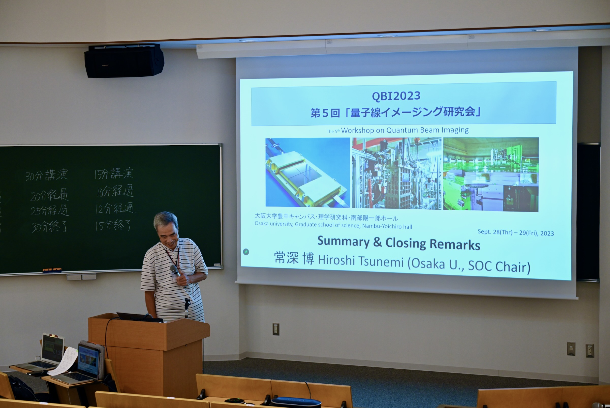

QBI2023
第５回「量子線イメージング研究会」



Purpose of the meeting
赤外線・X線・ガンマ線等の光子や、電子、中性子、分子、イオンといった量子線を検出・解析する科学技術は、素粒子・原子核物理学、宇宙物理学、物質科学から生命科学、医学にいたる広い分野で重要な貢献を果たしてきました。近年、これらの領域のイメージング検出技術が著しく発展しています。また、理学・工学や産官学の連携も進み、新展開が生まれつつあります。ここに、分野を横断して「量子線イメージング」を議論する場を設け、科学技術の発展と新分野の創成を目指した研究会を開催します。
Scientific and technological advancements in detecting and analyzing quantum beam such as photons (infrared, X-rays, gamma rays), electrons, neutrons, molecules, and ions have made significant contributions in a wide range of fields, including particle and nuclear physics, astrophysics, materials science, life sciences, and medicine. In recent years, imaging technologies in these areas have seen remarkable development. Collaboration between the fields of natural sciences, engineering, and industry-academia has also progressed, leading to new breakthroughs. The purpose of our conference is to provide a platform for discussion from the perspective of "Quantum Beam Imaging (QBI)" that cuts across various fields. Then, we expect to promote the development of scientific technology and create new fields of study through interdisciplinary information exchange.
The participants of the research conference are young researchers, including graduate students, as well as researchers who actively engage in research and development in their respective fields and senior researchers who lead research groups. The conference also welcomes researchers who explore QBI technologies based on basic principles, regardless of whether they are from academic fields or aim for practical applications in industry. Therefore, in terms of presentation content, we expect discussions on state-of-the-art results of the QBI that contribute to achieving the objectives of each field, exploring the applicability based on the unique principles and know-how of each field and identifying commonalities with other fields. In other words, the audience may have an understanding of the principles of physics but may not necessarily be experts in that specific field. We would appreciate if you could keep this in mind and provide necessary introductions as needed. Additionally, if you think it useful to explain applications in the relevant field, we expect a brief overview to be provided.
News
お知らせ
- Web page を開きました
- 参加登録を開始しました
- 9月21日：プログラムを公開しました
- 参加登録のwebを閉じました。
- おかげさまで盛況のうちに研究会は終了しました。参加者のみなさま、ありがとうございます。参加登録者数は108名、現地参加者は63人でした。
Dates & Venue
2023年9月28日・9月29日
大阪大学豊中キャンパス・理学研究科・南部陽一郎ホール(web page)
Speakers
Keynote Lecture Sep. 28 13:10 -- 14:10 “Fully Depleted Charge-Coupled Devices for Scientific Applications including Single-Electron Detection”
Steve Holland
Lawrence Berkeley National Laboratory
In this work we review the device physics and technology of fully depleted CCDs and their use in scientific applications. Back-illuminated, 250-micron thick CCDs produced at Teledyne DALSA Semiconductor and the Lawrence Berkeley National Laboratory were developed for the U.S. Department of Energy Dark Energy projects the Dark Energy Survey and the Dark Energy Spectroscopic Instrument. Fully depleted, 650-micron thick, single-electron counting Skipper CCDs for direct Dark Matter detection projects are in use (SENSEI), in production (DAMIC-M,) and under development (OSCURA). We will also describe CCDs for fundamental radiation-detection applications, methods to improve the readout speed of single-photon detecting CCDs with applications in astronomy and quantum imaging, and process development for fully depleted CCD production on 200-mm diameter wafers.
Keynote Lecture Sep. 29 9:00 -- 10:00 (online) “3-D gamma-ray imaging: From constraint to unconstraint motions”
Kai Vetter
Department of Nuclear Engineering, University of California Berkeley, USA
Gamma-ray imaging is an essential tool in elucidating morphological as well as dynamical and functional features and processes ranging from tracking radiological labelled molecules in organisms to exploring nuclear phenomena in stars. Recent developments in radiation detection instrumentation, multi-sensor fusion, and data processing provide improvements in medicine, in the operation and decommissioning of nuclear facilities, in proliferation detection and emergency response, and in astrophysics covering the near as well as the far field in imaging. In parallel, advances in computer vision have enabled the realization of what we call Scene-Data Fusion (SDF) which consists of the mapping of scenes and the fusion of radiation data with the scenes in three dimensions in near real time from freely moving systems. In contrast to conventional 2D or 3D and tomographic systems which are based on static measurements and constraint motions typically on a gantry around an object, respectively, SDF can create 3D images from any freely moving platform including small ground robots or drones. In my presentation, I will introduce some of the concepts and their underlying radiation detection and imaging instruments we have developed and discuss results in areas such as Fukushima or Chornobyl in Ukraine and recent developments on quantification and semantic segmentation reflecting some of the possible extensions of the basic SDF concept.
Invited Speakers
| Date | Name | Affiliation | Title |
|---|---|---|---|
| Sep. 28 14:10--14:40 | 大田良亮 (OTA Ryosuke) | 浜松ホトニクス (Hamamatsu Photonics) | Reconstruction-free positron emission imaging using ultrafast detectors |
| Sep. 28 15:10--15:40 (online) | 石田高史 (ISHIDA Takafumi) | 名古屋大学 (Nagoya Univ.) | Development of high-speed electron-beam imaging using SOI image sensors |
| Sep. 28 15:40--16:10 | Sundararajan Balasekaran | 住友電工 (Sumitomo Electric) | Development of Type-II Superlattice image sensors for high-sensitivity applications |
| Sep. 29 10:10--10:40 | Kazuhiro Terao | SLAC | Physics Inference Using Computer Vision and Machine Learning |
| Sep. 29 11:25--11:55 | 笠置歩 (KASAGI Ayumi) | 立教大学 (Rikkyo Univ.) | Visualization and Analysis of Trajectories of Particles using Nuclear Emulsion and Microscopy |
| Sep. 29 13:40--14:10 | Futa Mochizuki et al. | Sony Semiconductor Solutions | A 2.97μm-pitch Event-based Vision Sensor with Shared Pixel Front-end Circuitry and Low-noise Intensity Readout Mode |
| Sep. 29 15:25--15:55 | 岸下徹一 (KISHISHITA Tetsuichi) | KEK | Development of Wide-bandgap Semiconductor Pixel Sensors for Charged-particle Detectors |
Time table
研究会は9/28 13:00開始、9/29 16:40ごろ終了の予定です。
| Time | Talk | Name | Affiliation | Title |
|---|---|---|---|---|
| 9/28 13:00 | Opening | LOC (松本) | 大阪大学 | |
| 13:10 | 基調講演 | Steve Holland | LBNL | Fully Depleted Charge-Coupled Devices for Scientific Applications including Single-Electron Detection |
| 14:10 | 招待講演 | 大田良亮 | 浜松ホトニクス | Reconstruction-free positron emission imaging using ultrafast detectors |
| 14:40 | 一般講演 | 中村勇 | KEK | KEK PF-AR測定器開発テストビームラインの紹介 |
| 15:10 | 招待講演 | 石田高史 | 名古屋大学 | Development of high-speed electron-beam imaging using SOI image sensors |
| 15:40 | 招待講演 | Sundararajan Balasekaran | 住友電工 | Development of Type-II Superlattice image sensors for high-sensitivity applications |
| 16:10 | 学生講演 | 岩田季也 | 東京大学 | Development of the X-ray imaging polarimeter using micro-pixel CMOS imager |
| 16:25 | 学生講演 | 小林竜也 | 静岡大学大学院総合科学技術研究科 | 変調率を改善した高近赤外感度SOIロックインピクセルの提案 |
| 16:40 | 学生講演 | Hiroumi Matsuhashi | University of Tokyo | Evaluation of on-chip ADC installed on the X-ray SOI pixel detector |
| 9/29 9:00 | 基調講演 | Kai Vetter | LBNL | 3-D gamma-ray imaging: From constraint to unconstraint motions |
| 10:10 | 招待講演 | Kazuhiro Terao | SLAC | Physics Inference Using Computer Vision and Machine Learning |
| 10:40 | 学生講演 | 高嶋聡 | 大阪大学 | Development of a prototype liquid argon Compton camera |
| 10:55 | 学生講演 | 白濱健太郎 | 大阪大学 | 液体アルゴンTPC用多チャンネル光検出器の開発 |
| 11:25 | 招待講演 | 笠置歩 | 立教大学 | Visualization and Analysis of Trajectories of Particles using Nuclear Emulsion and Microscopy |
| 11:55 | 学生講演 | 供田崇弘 | 金沢大学 | Ex vivo imaging of gadolinium contrast agents using MPPC-based Photon-Counting CT |
| 12:10 | 学生講演 | Mio Aoyagi | Osaka University | New CCD driving method of Xtend onboard the XRISM satellite for suppressing external charge intrusion |
| 13:40 | 招待講演 | Futa Mochizuki | Sony Semiconductor Solutions | A 2.97μm-pitch Event-based Vision Sensor with Shared Pixel Front-end Circuitry and Low-noise Intensity Readout Mode |
| 14:10 | 一般講演 | 三原基嗣 | 大阪大学 | ファイバートラッカーによるミュオン・核スピンイメージング |
| 14:25 | 学生講演 | 伊藤尚輝 | 東京理科大学 | 高エネルギー荷電粒子に対するTimePix3を搭載したハイブリッドピクセル半導体検出器の応答評価 |
| 14:40 | 学生講演 | 藤澤海斗 | 東京理科大学 | 月周回探査機搭載用エネルギースペクトロメータLunar-RICheSのDSSD位置検出器開発 |
| 14:55 | 学生講演 | 倉本春希 | 大阪大学 | XL-Calibur用X線望遠鏡のフライト前後における性能変化 |
| 15:25 | 招待講演 | 岸下徹一 | KEK | Development of Wide-bandgap Semiconductor Pixel Sensors for Charged-particle Detectors |
| 15:55 | 一般講演 | Yutaka Tsuzuki | RIKEN | A new Compton imaging method with MCMC |
| 16:10 | 一般講演 | 中嶋大 | 関東学院大学 理工学部 | 宇宙X線観測に向けたCCD+CMOSハイブリッドセンサによる高速X線イメージング |
| 16:25 | Closing | SOC (常深) |
講演は、スライドは英語にしてください。発表は英語・日本語どちらでも結構です。
講演時間は、基調講演1時間、招待講演30分、一般講演と学生講演は質疑応答込で15分です。
研究会用の slack を準備しています。講演者の方は、そちらにスライドを置いてください (諸事情で公表できない場合には、この限りではございません。qbi2023 (at mark) ess.sci.osaka-u.ac.jp までご一報いただければ幸いです)。 特に、学生発表賞に応募される方は、自分の発表までにslackにスライドを置くことが必須です。
Registration
参加登録の web は閉じました。参加希望の方は、qbi2023 (at mark) ess.sci.osaka-u.ac.jp までお尋ねください。
講演の募集締切は9月15日（金）に締め切りました。
SOC
- 常深博（大阪大）
- 新井康夫（KEK）
- 大久保雅隆（産総研）
- 片山晴善（JAXA）
- 高橋忠幸（東京大 IPMU）
- 鶴 剛（京都大）
- 中村哲（東大）
- 初井宇記（理研）
- 宮崎聡（国立天文台）
- 山谷泰賀（量子科学技術研究開発機構）
- 安富啓太（静岡大）
- 倉知郁生（ディーアンドエス）
- 松本浩典（大阪大）
LOC
松本浩典、小高裕和、野田博文 (大阪大)
共催・後援
共催: 大阪大学大学院理学研究科
後援: 日本物理学会、日本天文学会、高エネルギー宇宙物理連絡会
科研費基盤A 23H00128 「銀河と巨大ブラックホールの共進化の謎を暴く高角度分解能硬X線望遠鏡の開発」
Previous conferences
Contacts
Email: qbi2023(at mark)ess.sci.osaka-u.ac.jp まで。 "(at mark)" を @ に置き換えてください。